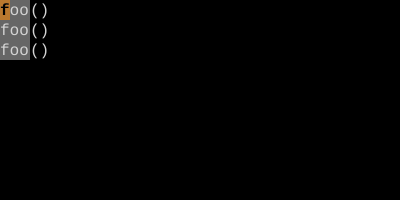
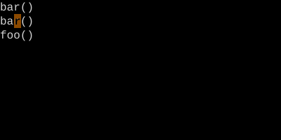
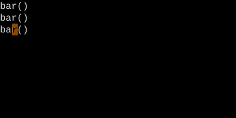

Change-Next-Match Loop — cgn
Like *cw, but . jumps and changes in one step.
After a /search, cgn changes the next match. Then . by itself jumps to the next match and changes it — no need for separate n. The pinnacle of dot-repeat refactoring.
cgn
cgn is the better version of the *cw loop. It rolls jump-to-next and change into a single dot-repeatable action.
| Key | Note |
|---|---|
| {key:/}`old` | Search for the thing you want to change |
| {key:Enter} | |
| {key:c}{key:g}{key:n} | Change next match |
| `NEW` | Type replacement |
| {key:Esc} | Commit |
| {key:.} | Jump to next match and change it |
| {key:.} | Again |
| {key:n} | Skip a match — move to the one after |
| {key:.} | Change it |
Worked example — * then cgn then ...
Change-next-match — fewer keystrokes than the star-then-cw-then-dot loop.


bar, Esc — change next match.


cgn is c plus the gn motion (next match). . replays the whole thing — search-and-change in one keystroke.
Watch
- 📺 #0465 yyp — Duplicate Line (not yet published)
- 📺 #0466 Star-Dot Pattern (not yet published)
See also: The Replace Loop — {key:*}, {key:cw}, then {key:.} {key:.} {key:.}, Repeat Last Change, The Vim Grammar